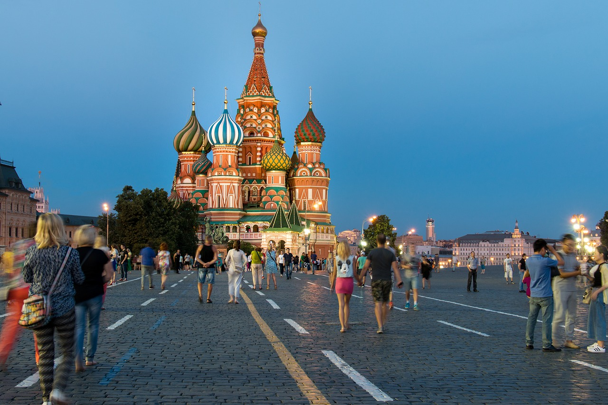
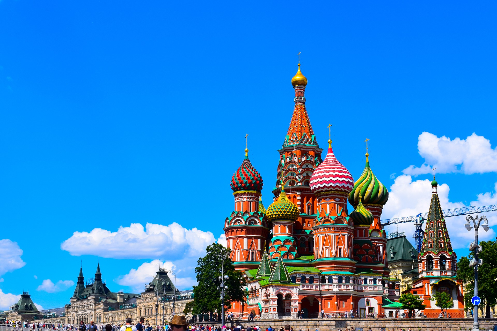
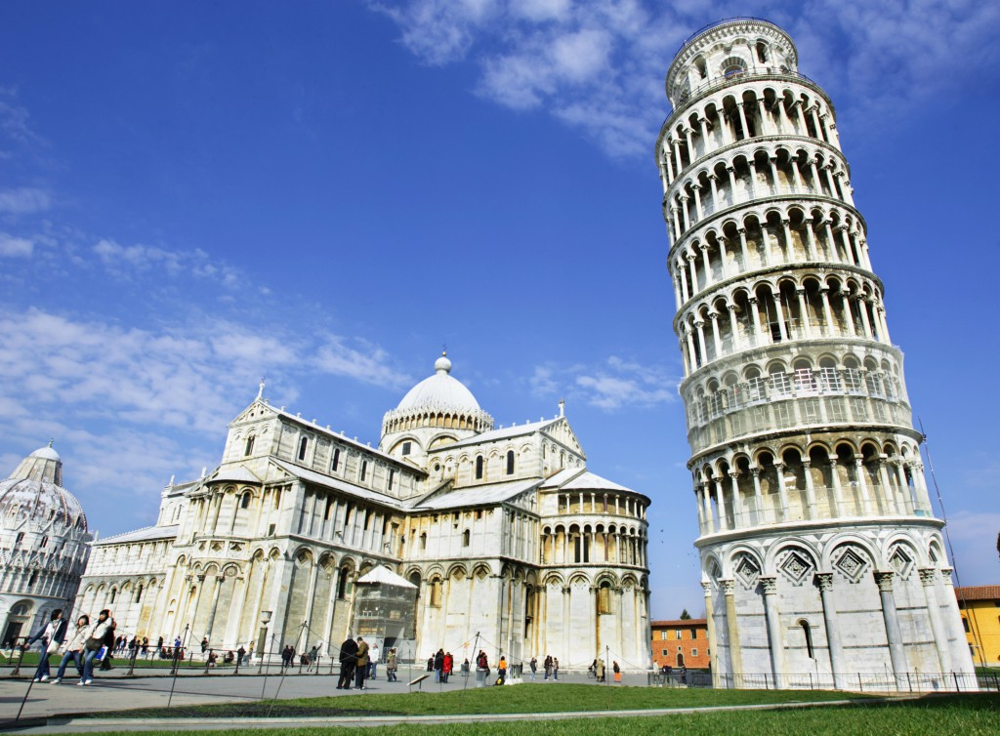

Bienvenido
Hola, bienvenido a nuestra pagina web, en esta pagina encontraras informacion acerca de lugares turisticos alrededor del mundo esperamos te guste
Rusia

Hay tanto y tanto que ver en Rusia que necesitaríamos varias semanas para descubrirla por completo, pero te recomendamos algunas de sus atracciones más conocidas.
Este verdadero tesoro todavía por descubrir por muchos turistas ofrece rico patrimonio histórico y cultural, naturaleza salvaje, estepas montañosas y un vasto territorio que le convierte en el país más grande del mundo. En esta pagina les enseñamos los puntos más visitados de sus dos principales ciudades, Moscú y San Petersburgo, además de otros lugares turísticos de Rusia para los que es necesario un trayecto en avión de casi nueve horas.
1. Kremlin, Moscú
La ‘Casa Blanca rusa’ está formada por un conjunto de edificios civiles y religiosos, cuatro palacios y cuatro catedrales, para ser exactos, agrupados en un recinto que delimita con la Muralla del Kremlin. El primero de esta lista de lugares turísticos de Rusia está abierto al público desde 1955, y en 1990 fue incluido en la lista de Patrimonios de la Humanidad de la Unesco. Puede visitarse con dos tipos de entrada: una para el territorio exterior del Kremlin y la plaza de las catedrales, y otra para acceder al museo de la Armería. Ambas merecen la pena.

Italia
Italia es un país fantástico que lleva consigo una voz renacentista impresionante, se encuentra en el continente europeo, muy cerca de Francia y España. Para ir desde cualquier destino es recomendable viajar a Italia en un vuelo directo hacia su capital, Roma, que te va a recibir en su aeropuerto internacional. Desde allí, podrás dirigirte a geniales locaciones y destinos turísticos de Italia para tus vacaciones aventureras.

1. Roma
Roma es una de las ciudades importantes de Italia gracias a sus construcciones arquitectónicas y artísticas que son muy antiguas y hermosas. Se halla en Italia, en la región de Lacio y es factible ir con facilidad desde cualquier destino europeo si tomas un vuelo directo al urbanismo. Desde locaciones cercanas como Francia e Italia, el paseo dura unas tres horas, y es sumamente cómodo.
Roma tiene una buena cantidad de ruinas que derivan del apogeo histórico del extinto Imperio, por lo que si te gusta la arqueología, debes ir a visitar algunos espectaculares yacimientos. El Coliseo es uno de los paseos obligatorios de Roma, se trata de una fabulosa construcción inmensa donde los gladiadores lucharon a la muerte durante siglos. Se halla en Laurentina y acercarse es sencillo si tomas el metro a la estación Colosseo.